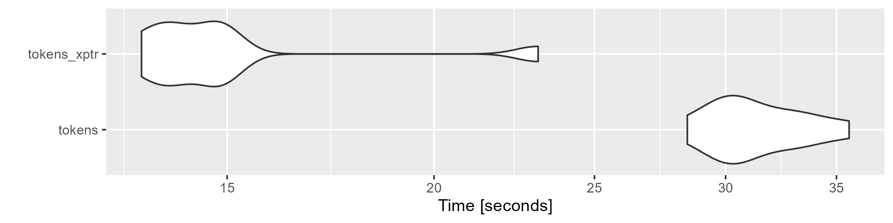

vignettes/pkgdown/tokens.Rmd
tokens.RmdIn quanteda version 4.0, we introduced a new class
of tokens object, tokens_xptr, to make the efficiency of
operations on a large corpus. The package’s tokens object
has been a list of vectors that record integer IDs of tokens. Therefore,
a tokens object is converted to a C++ object, modified and
converted back to R every time tokens_* functions are
applied. As the size of the object becomes larger, the conversion
between R and C++ takes much of the execution time. However, the
tokens_xptr object is based on a external-pointer object
that keeps the data as the C++ object, eliminating the cost of such
conversion. This is beneficial especially when large tokens objects
(more than one million tokens) are processed through a long
pipeline.
You can create a tokens_xptr from tokens
using the as.tokens_xptr() method. If xtoks is
printed, the address of its underlying data is shown in the first line
(pointer to xxxx). As an external pointer object, the
underlying data of the copy of the object xtoks_copy is the
same. This means that operations on xtoks using
tokens_* functions also affect xtoks_copy even
after the copying (shallow copy). If you want to copy the underlying
data of xtoks_copy objects (deep copy),
as.tokens_xptr() should be applied to
xtoks.
require(quanteda)
require(ggplot2)
corp <- corpus_reshape(data_corpus_guardian)
toks <- tokens(corp)
xtoks <- as.tokens_xptr(toks)
print(xtoks, max_ndoc = 1)
## Tokens consisting of 2,512,887 documents and 9 docvars (pointer to 0x251313ec540).
## text123896.1 :
## [1] "Democratic" "presidential" "candidate" "Bernie" "Sanders"
## [6] "raised" "more" "than" "$" "33m"
## [11] "in" "the"
## [ ... and 15 more ]
##
## [ reached max_ndoc ... 2,512,886 more documents ]
## shallow copy
xtoks_copy <- xtoks
print(xtoks_copy, max_ndoc = 1)
## Tokens consisting of 2,512,887 documents and 9 docvars (pointer to 0x251313ec540).
## text123896.1 :
## [1] "Democratic" "presidential" "candidate" "Bernie" "Sanders"
## [6] "raised" "more" "than" "$" "33m"
## [11] "in" "the"
## [ ... and 15 more ]
##
## [ reached max_ndoc ... 2,512,886 more documents ]
## deep copy
xtoks_deepcopy <- as.tokens_xptr(xtoks)
print(xtoks_deepcopy, max_ndoc = 1)
## Tokens consisting of 2,512,887 documents and 9 docvars (pointer to 0x251f848cc68).
## text123896.1 :
## [1] "Democratic" "presidential" "candidate" "Bernie" "Sanders"
## [6] "raised" "more" "than" "$" "33m"
## [11] "in" "the"
## [ ... and 15 more ]
##
## [ reached max_ndoc ... 2,512,886 more documents ]You can use tokens_* functions to modify
tokens_xptr objects in the same way as tokens
objects. tokens_select(), tokens_compound(),
tokens_lookup(), tokens_ngrams() and
tokens_replace() return a shallow copy of the input object
for efficiency. However, tokens_subset(), [],
tokens_group(), tokens_segment() and
tokens_chunk() return a deep copy because they can change
the number of the order of the documents. Please pay attention to the
address of the pointer (pointer to xxxx) when you use
tokens_xptr objects.
# shallow copy
xtoks2 <- tokens_remove(xtoks, stopwords("en"))
print(xtoks2, max_ndoc = 1)
## Tokens consisting of 2,512,887 documents and 9 docvars (pointer to 0x251313ec540).
## text123896.1 :
## [1] "Democratic" "presidential" "candidate" "Bernie" "Sanders"
## [6] "raised" "$" "33m" "last" "three"
## [11] "months" "2015"
## [ ... and 8 more ]
##
## [ reached max_ndoc ... 2,512,886 more documents ]
# deep copy
xtoks3 <- tokens_subset(xtoks, len > 500)
print(xtoks3, max_ndoc = 1)
## Tokens consisting of 2,274,748 documents and 9 docvars (pointer to 0x2513026d648).
## text123897.1 :
## [1] "anti-tax" "activist" "Grover" "Norquist" "waded"
## [6] "controversy" "President" "Obama's" "attempt" "bypass"
## [11] "Congress" "gun"
## [ ... and 9 more ]
##
## [ reached max_ndoc ... 2,274,747 more documents ]You should also note that you cannot save the underlying data of
tokens_xptr objects. Thus, you should apply the
as.tokens() method before passing it to save()
or saveRDS().
We apply the same tokens_* functions to
tokens and tokens_xptr objects and construct a
dfm in this mock pipeline. The execution time for latter is
significantly shorter than for the former thanks to the cost saved by
passing the data without expensive conversion.
microbenchmark::microbenchmark(
tokens = toks %>%
tokens_remove(stopwords("en"), padding = TRUE) %>%
tokens_remove(c("http:*", "https:*", "*.com", "*.org", "*.net"), padding = TRUE) %>%
tokens_compound(newsmap::data_dictionary_newsmap_en) %>%
dfm(remove_padding = TRUE),
tokens_xptr = as.tokens_xptr(toks) %>%
tokens_remove(stopwords("en"), padding = TRUE) %>%
tokens_remove(c("http:*", "https:*", "*.com", "*.org", "*.net"), padding = TRUE) %>%
tokens_compound(newsmap::data_dictionary_newsmap_en) %>%
dfm(remove_padding = TRUE),
times = 10
) %>% autoplot()